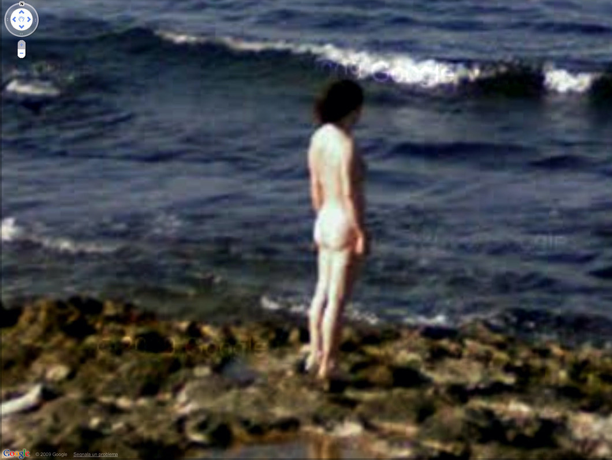
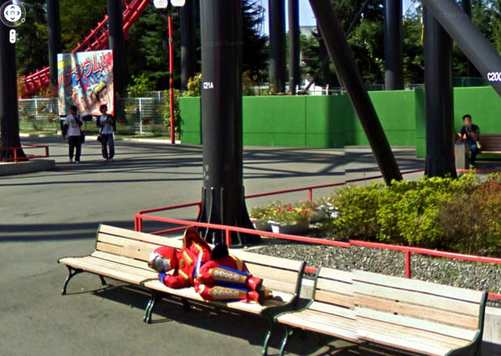
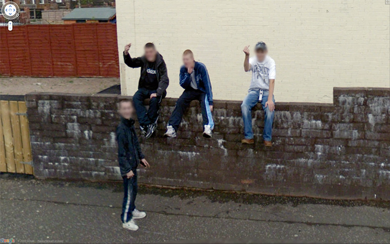
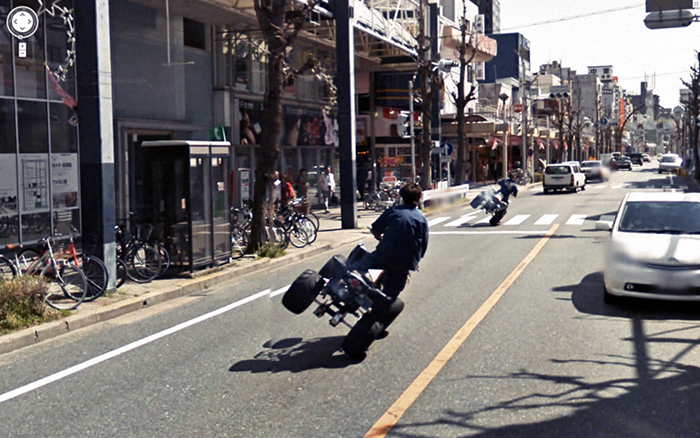

NINE EYES OF GOOGLE STREET VIEW
JON RAFMAN 2008 - ONGOING
Nine Eyes of Google Street View is both an archival project and a conceptual meditation on
the state of photography in a time of automated imagemaking on a massive scale.
In 2008, Jon Rafman began to collect screenshots of images from Google Street View. At the time, Street View
was a relatively new initiative, an effort to document everything in the world that could be seen from a moving car.
A massive, undiscerning machine for image-making whose purpose is to simply capture everything, Street View takes
photographs without apparent concern for ethics or aesthetics, from a supposedly neutral point of view.
Rafman conducted a close reading of Google Street View
and began to isolate images from this massive database, publishing them on blogs, as PDFs, in books, and as large
C-prints for gallery exhibition. In so doing, he reframed them within longer histories of photography and painting,
raising questions about the meaning and function of these images and their implications for artists and image-makers.

“WITH ITS SUPPOSEDLY NEUTRAL GAZE,
THE STREET VIEW PHOTOGRAPHY HAD A
SPONTANEOUS QUALITY UNSPOILED
BY THE SENSITIVITIES OR AGENDAS
OF A HUMAN PHOTOGRAPHER.”
Google Street View was introduced as a feature of Google Maps in 2007.
In the street view that we know today, a user can drop in on a given street
almost anywhere in the world and explore stitched together panoramic images.
In 2007, Google offered only a selection of streets in the United States and
slowly expanded their coverage over the years.
In 2008, Rafman began to screenshot and collect scenes
captured by Google Street View’s cameras.
He first released a selection of Google Street Views
as a pdf that year at googlestreetviews.com.
He soon followed it with two more volumes.
Rafman later began to keep an ongoing Tumblr blog
where he would post his Street View compositions,
and published a widely circulated post about this body
of work on the blog ArtFCity (archived here).
Rafman was interested in the particular relationship
between Google Street View’s cameras and their
surroundings. Unlike in the photographic tradition that
precedes it,Street View Photography is not concerned
with what is photographed and how it is framed.

Instead, Google’s Street View photography
aims to simply capture information
in order to, as Google’s mission states,
“to organize the world’s information and
make it universally accessible and useful.”

